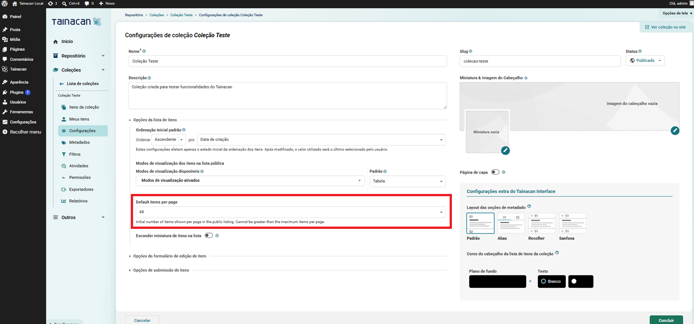
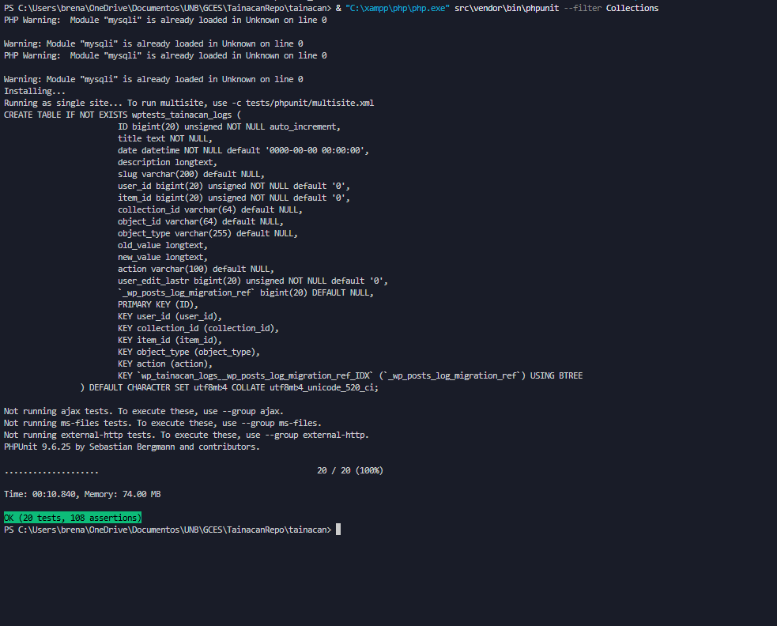
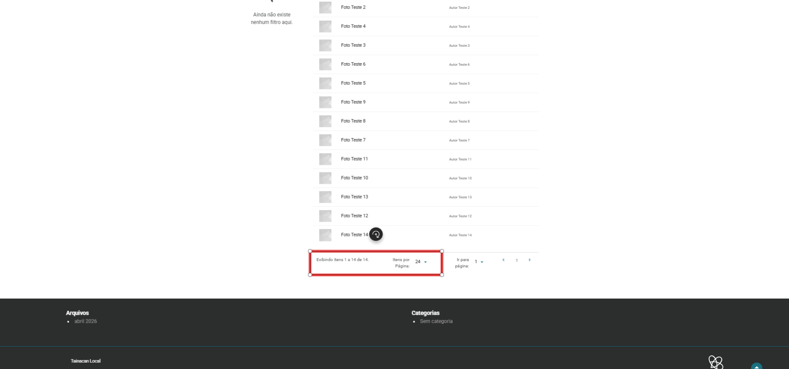
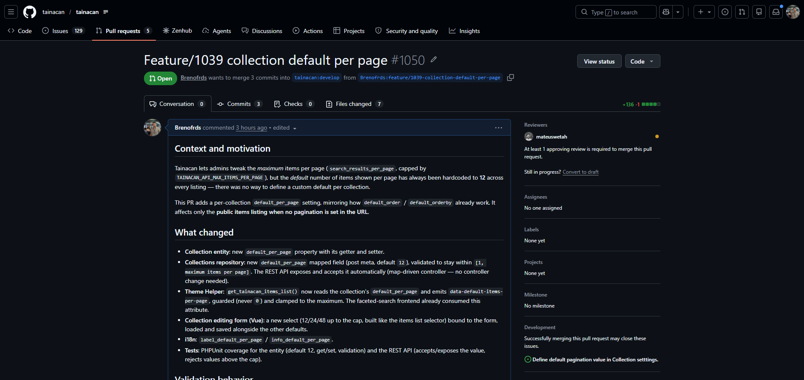
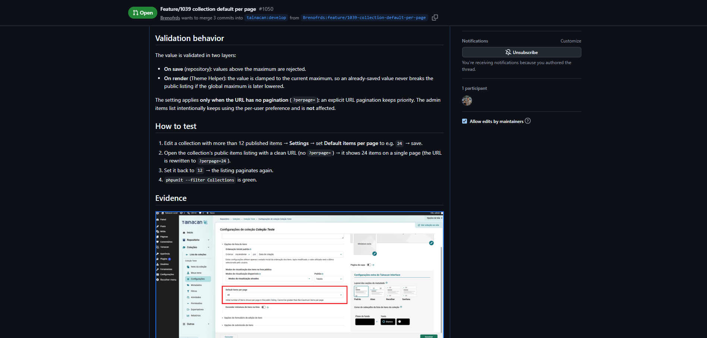
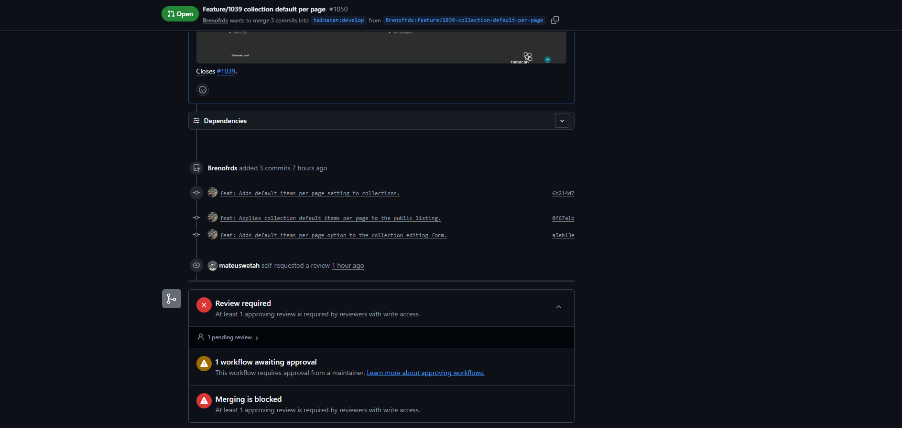

Diário de Bordo – Sprint 5
Informações da Sprint
| Item | Descrição |
|---|---|
| Sprint | Sprint 5 |
| Data de Início | 10/06/2026 |
| Data de Término | 24/06/2026 |
| Responsável | Breno Soares Fernandes |
Objetivo da Sprint
Implementar a feature da issue #1039 – Define default pagination value in Collection settings, assumida na Sprint 4. O objetivo foi permitir que cada coleção defina o número padrão de itens por página exibido na sua listagem pública (hoje fixo em 12 no sistema), preparando o ambiente de desenvolvimento, implementando a solução (backend, frontend e testes), validando ponta a ponta e abrindo a Pull Request no repositório oficial.
Planejamento e Atividades da Sprint
A implementação foi conduzida em etapas pequenas e commitáveis, seguindo o entendimento
técnico construído a partir da própria issue (que indicava imitar o comportamento já existente
de default_order / default_orderby).
| Atividade | Status |
|---|---|
| Preparar o ambiente local para rodar o código do repositório (não a versão da loja) | ✔️ |
| Configurar a suíte de testes automatizados (PHPUnit) | ✔️ |
| Implementar o backend (entidade + repositório + validação) | ✔️ |
| Aplicar o valor na listagem pública (Theme Helper) | ✔️ |
| Implementar a opção no formulário de edição da coleção (Vue) + i18n | ✔️ |
| Validar a solução ponta a ponta (admin + interface pública) | ✔️ |
| Abrir a Pull Request no repositório oficial | ✔️ |
Ferramentas e Tecnologias Utilizadas
| Ferramenta / Tecnologia | Finalidade |
|---|---|
| XAMPP (Apache + MySQL) | Servidor local para rodar o WordPress |
| WordPress + plugin Tainacan | Plataforma e plugin alvo da contribuição |
| PHP / Composer | Backend do plugin e dependências |
| Node.js / npm / Webpack / Vue 3 | Build e desenvolvimento do frontend |
| PHPUnit | Testes automatizados |
| Git / GitHub | Versionamento e abertura da PR |
| VS Code | Edição de código |
Atividades Realizadas em Detalhes
1. Preparação do ambiente de desenvolvimento
O primeiro desafio foi fazer o WordPress rodar o código do repositório (versão de desenvolvimento) em vez do plugin instalado pela loja. Isso envolveu instalar as dependências (Composer e npm), compilar os assets (Webpack + SASS) e implantar o resultado na instalação local do WordPress.
Alguns obstáculos do ambiente Windows foram resolvidos:
- Habilitar a extensão gd do PHP (necessária para processamento de imagens);
- Instalar as dependências PHP contornando uma exigência de versão (o projeto pede PHP 8.3 em
um pacote de exportação XLSX, e o ambiente tinha 8.2);
- Como o rsync (usado pelo script de build oficial) não existe no Git Bash do Windows, a
implantação foi feita com robocopy.
Também configurei a suíte de testes do WordPress (PHPUnit) em um banco de dados dedicado, para conseguir rodar e escrever testes automatizados localmente.
2. Entendimento técnico da solução
Antes de codar, mapeei como a feature deveria se encaixar na arquitetura do Tainacan:
- Entidade Collection e Repositório: onde as configurações da coleção (como ordem
padrão) são declaradas e persistidas;
- Theme Helper: monta a listagem pública e já repassa atributos data-* para o frontend;
- Formulário Vue de edição da coleção: onde o administrador define as opções.
Um ponto importante que descobri: o frontend da busca facetada já sabia receber um valor de itens por página — faltava o backend gerar esse valor a partir da configuração da coleção.
3. Implementação do backend (entidade + repositório + validação)
- Adicionei o atributo
default_per_pagena entidadeCollection, com getter e setter. - Registrei o campo no repositório como metadado da coleção, com valor padrão 12 e
validação para garantir que o valor nunca ultrapasse o máximo de itens por página
(
search_results_per_page/TAINACAN_API_MAX_ITEMS_PER_PAGE). - A API REST passou a aceitar e expor o campo automaticamente (o controller é dirigido pelo mapeamento de campos do repositório), sem necessidade de alterá-lo.
4. Aplicação do valor na listagem pública (Theme Helper)
Ajustei a função get_tainacan_items_list para ler o default_per_page da coleção e
repassá-lo ao frontend (atributo data-default-items-per-page), com duas proteções: nunca
emitir um valor inválido e limitar ao teto (clamp), garantindo que a listagem nunca quebre
mesmo que o máximo global seja reduzido depois.
5. Implementação do frontend (formulário de edição + i18n)
No formulário de edição da coleção, adicionei um campo de seleção (select) "Default items per page" com as opções 12/24/48 e o teto (montadas dinamicamente, como na listagem de itens), ligado ao estado do formulário (carregar o valor salvo e enviar ao salvar). Também adicionei os textos traduzíveis (i18n).

6. Testes automatizados
Escrevi testes PHPUnit cobrindo: - a entidade (valor padrão 12, gravar/ler o valor, e a validação que bloqueia valores acima do teto); - a API REST (aceitar e expor o valor; rejeitar valores acima do teto).
Os testes passaram com sucesso, sem regressões na suíte de coleções.

7. Validação ponta a ponta
Para validar de verdade, criei uma coleção de teste com 14 itens e:
- defini o padrão como 24 nas configurações → a listagem pública passou a mostrar todos os
itens em uma página só (a URL foi reescrita para ?perpage=24);
- repeti com 48, confirmando o comportamento;
- confirmei que, com paginação explícita na URL (?perpage=), esta tem prioridade — exatamente
como a issue pede ("apenas quando não há paginação na URL");
- confirmei também que a listagem do admin continua usando a preferência pessoal do usuário
(e não o padrão da coleção), preservando o escopo da feature.

8. Abertura da Pull Request
Abri a Pull Request #1050 contra a branch
develop, seguindo o padrão do projeto (texto em inglês, narrativo: contexto, o que mudou,
comportamento da validação, como testar e evidências), com Closes #1039. O mantenedor
mateuswetah se atribuiu como revisor.



Aprendizados e Dificuldades
Maiores Dificuldades:
- Configurar o ambiente de desenvolvimento e a suíte de testes em Windows, contornando
ferramentas ausentes (
rsync,svn) e exigências de versão do PHP. - Entender uma base de código grande e desconhecida o suficiente para implementar uma alteração cirúrgica sem quebrar funcionalidades existentes.
- Lidar com a parte de frontend (Vue), garantindo que o valor salvo fosse carregado e exibido corretamente no formulário.
Aprendizados:
- A arquitetura do Tainacan: entidade → repositório → API REST → Theme Helper → frontend Vue, e como uma configuração de coleção percorre essas camadas.
- A importância de imitar padrões existentes (
default_order/default_orderby) para manter consistência e reduzir risco. - O valor de testes automatizados e de uma validação manual ponta a ponta antes de abrir a PR.
- O fluxo completo de contribuição open-source: fork, branch, commits no padrão do projeto, e PR com descrição autossuficiente para o revisor.
Próximos Passos
- Aguardar a revisão do mantenedor na PR #1050.
- Caso sejam solicitadas alterações, aplicá-las na mesma branch e atualizar a PR.
Histórico de Versões
| Versão | Data | Descrição | Autor |
|---|---|---|---|
1.0 |
16/06/2026 | Criação do Diário de Bordo da Sprint 5 | Breno Soares Fernandes |